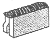
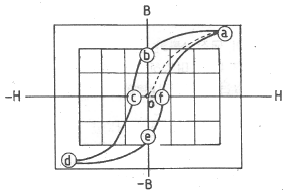
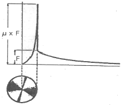
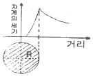
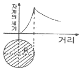
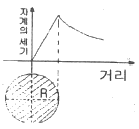
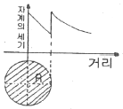

자기비파괴검사기사 (2014-08-17 기출문제)
1과목: 비파괴검사 개론
1. 감마선과 초음파와의 공통점은?
- 진공을 투과한다.
- 철강을 전리시키면서 투과한다.
- 에너지를 지니고 있으나 질량이 없다.
- 결함에서 반사와 산란하는 성질을 이용하는 비파괴검사 선원이다.
(정답률: 73%)

2. 비파괴검사의 종류에 해당되지 않는 것은?
- 충격측정시험
- 전기전도율시험
- 적외선분석시험
- 암모니아 변색법
(정답률: 87%)
3. 침투탐상시험에 사용되는 침투액의 특성으로 틀린 것은?
- 적심성이 좋아야 한다.
- 인화점이 낮아야 한다.
- 비휘발성 이어야 한다.
- 색채콘트라스트가 높아야 한다.
(정답률: 82%)
4. 방사선투과시험의 장점을 옳게 설명한 것은?
- 방사선투과시험은 다른 검사법에 비해 조작이 쉽고 간편하다.
- 방사선 조사방향과 관계없이 모든 결함을 검출할 수 있다.
- 방사선투과시험은 양 면에 접근하지 않고 한 면에서 검사가 가능하다.
- 금속 및 비금속 재료의 시험에 적용 가능하며, 두께차를 가지는 구상 결함의 검출이 우수하다.
(정답률: 86%)
5. 다음 중 앙사선 계측기를 이용하는 누실검사에서 추적가스로 사용되는 것은?
- Kr
- Ar
- Rn
- NH3
(정답률: 63%)
6. 함연황동에 관한 설명 중 툴린 것은?
- 쾌삭황동 또는 Hard brass라 한다.
- 7 : 3 황동에 Ti를 첨가한 것이다.
- 절삭성이 좋고 가공표면이 깨끗하여 정밀제품 등에 이용된다.
- Pb는 α 황동에 거의 고용하지 않고 입계 및 입내에 미립으로 유리하여 존재한다.
(정답률: 67%)
7. 7. 인잠시험에서 10mm의 강봉을 표점거리 50mm로 표시한 후. 시험편을 시험 후 측정하였더니 표점이 60mm가 되었다. 이때의 강도와 연신율은? (단 최대하중은 10톤으로 측정되었다.)
- 127.3 kgf/mm2, 20%
- 133 kgf/mm2, 15%
- 127.3 kgf/mm2, 10%
- 31.8 kgf/mm2, 20%
(정답률: 75%)
8. 빙점 이히의 저온에서 잘 견디는 내한강의 조직은?
- 페라이트
- 펄라이트
- 마텐자이트
- 오스테나
(정답률: 65%)
9. 고체 상태에서 낮은 응력에 의해 수백% 이상 연신을 일으키는 합금은?
- 비정질합금
- 초전도합금
- 형상기억합금
- 초소성합금
(정답률: 80%)
10. 반도체(semiconductor) 재료가 아닌 것은?
- Si
- Ti
- Ge
- GaAs
(정답률: 67%)
11. 내식성 Al합금에 대한 설명 중 틀린 것은?
- 라우탈 합금은 Al-Cr-Mo계 합금이다.
- 하이드로날륨 합금은 Al-6-10%Mg 합금이다.
- 알드레이 합금은 Al-0.45~1.5%Mg~0.2~1.2%Si 합금이다.
- 알크레드는 고강도 Al합금 표면에 순 Al 또는 내식성 Al합금을 피복한 합금판재이다.
(정답률: 70%)
12. 탄소강에서 황(S)의 영향으로 옳은 것은?
- 유동성을 개선한다.
- 저온취성의 원인이 된다.
- 연신율 및 충격값을 감소시킨다.
- 경화능을 현저하게 증가시킨다.
(정답률: 50%)
13. 내열 및 내식성이 가장 우수한 재료는?
- 탄소강
- 하드필드강
- 스테인리스강
- 황복합쾌삭강
(정답률: 92%)
14. 회주철에서 밀도가 가장 작은 조직을 구성하고 있는 것은?
- 흑연
- 페라이트
- 펄라이트
- 시멘타이트
(정답률: 69%)
15. 게이지용 강의 특징을 설명한 것 중 틀린 것은?
- 내식성이 좋을 것
- 마모성이 크고 경도가 높을 것
- 담금질에 의한 변형이 적을 것
- 오랜 시간 경과하여도 치수의 변화가 적을 것
(정답률: 80%)
16. 다음 그림과 같은 용접이음의 명칭으로 맞는 것은?

- 모서리 이음
- 변두리 이음
- 측면 필릿 이음
- 맞대기 이음
(정답률: 77%)
17. 알루미늄합금을 용접하는 방법으로 가장 알맞은 것은?
- 피복 금속 아크 용접
- 서브머지드 아크용접
- 불활성 가스 아크용접
- 탄산가스 아크용접
(정답률: 67%)
18. 용접품의 비파괴검사 중에서 가장 간단한 검사법은?
- 육안검사(visual test)
- 누설검사(leak test)
- 침투검사(penetrant test)
- 초음파 검사(ultrasonic test)
(정답률: 96%)
19. 용접전류가 400A, 아크 전압은 35V, 용접속도가 20cm/min 일 때 단위 길이당 용접 입열은 몇 J/cm 인가?
- 42000
- 425000
- 44000
- 45500
(정답률: 84%)
20. 판재의 두께가 금속은 0.01~2mm, 플라스틱은 1~5mm 정도의 얇은 판의 접합에 이용되는 용접법은?
- 전자 빔 용접(electron beam welding)
- 초음파 용점(ultrasonic welding)
- 레이저 빔 용접(laser beam welding)
- 고주파 용접(hijgh frequency beam welding)
(정답률: 65%)
2과목: 자기탐상검사 원리
21. 두 종류의 금속을 접합하면 접합부는 각각 온도가 다르며, 그 접합한 면의 양쪽에 전위차가 발생하는 것을 무엇이라 하는가?
- Seebeck Effect
- Hall Effect
- Tomson Effect
- Fermi Effect
(정답률: 66%)
22. 직류를 사용한 극간법에서 극간을 최대로 하였을 경우 적어도 몇 kg 이상의 인상력이 요구되는가?
- 4.5kg
- 9.0kg
- 13.5kg
- 18.1kg
(정답률: 61%)
23. 인덕턴스가 100μHenry, 저항 5Ω을 가진 코일이 200kHz 에서 사용될 때 코일의 임피던스는?
- 1.257 Ω
- 2.514 Ω
- 125.7 Ω
- 251.4 Ω
(정답률: 63%)
24. 다음 중 자분탐상시험에 사용되는 자분에 요구되는 특성으로 옳지 않은 것은?
- 높은 투자율
- 높은 항자성
- 낮은 보자성
- 좋은 분산성
(정답률: 81%)
25. 봉의 길이는 250mm, 직경은 75mm이고, 코일이 5회 감겨져 있을 때 봉의 직경 단위면적당 소요 전류는?
- 1400 A
- 1500 A
- 2700 A
- 27000 A
(정답률: 67%)
26. 자분탐상검사에서 자분지시의 형상에 영향을 주는 요인이 아닌 것은?
- 자계의 방향과 세기
- 결함의 크기 및 방향
- 탈자의 방향과 세기
- 시험체의 자기 특성
(정답률: 79%)
27. 자기 이력곡선에서 o-b가 의미하는 뜻은?

- 자기포화
- 항자력
- 잔류자기
- 자기저항
(정답률: 72%)
28. 다음 중 잔류법에 관한 사항으로 틀린 것은?
- 자화전류를 끊고 나서 자분을 적용하는 방법이다.
- 저탄소강이나 전자연철 등에 적용한다.
- 연속법에 비하여 결함 검출 능력이 떨어진다.
- 나사부분 등 복작합 형상 부분에 적용하면 의사모양 지시의 발생이 적다.
(정답률: 58%)
29. 자화전류의 종류와 선정방법에 관한 설명으로 옳지 못한 것은?
- 맥류는 표피효과가 전혀 생기지 않아 내부결함 검출 성능이 우수하다.
- 교류는 일반적으로 잔류법에는 사용되지 않는다.
- 충격전류는 일반적으로 연속법에는 사용되지 않는다.
- 교류에 의한 자화에서는 직류에 비해 반자장이 적다.
(정답률: 84%)
30. 대형시험체의 표면을 극간법으로 검사할 때의 장점이 아닌 것은?
- 전기적 직접 접촉이 없어도 가능하다.
- 소형이며 휴대가 간편하다.
- 임의의 불연속을 검출할 수 있다.
- 상자성체의 재료에 효과가 좋다.
(정답률: 78%)
31. 다음은 용접부 탐상에 대한 프로드법의 특징을 설명한 것으로 틀린 것은?
- 전극의 위치에 따라 용접부에서 원형자계의 방향을 선택할 수 있다.
- 교류와 건식자분을 함께 사용하면 표면 불연속 및 표면 직하의 불연속에 대해서도 감도가 우수하다.
- 불량접촉에 의한 아크가 생길 수 있으며, 한번에 검사 할 수 있는 부분이 적다.
- 건식자분을 사용하려면 시험면을 건조시켜야 하며, 전극의 간격을 자화전류의 크기에 맞추어야 한다.
(정답률: 77%)
32. 습식형광 자분탐상시험이 비형광 자분탐상에 비하여 장점인 것은?
- 검사의 정확성을 높일 수 있다.
- 다수의 작업장에서 형광들이 표준조명이므로 활용상 편리하다.
- 시험품이 대형일 때 유리하다.
- 시험품이 비자성체일 때 검사속도를 빠르게 한다.
(정답률: 83%)
33. 강자성체의 내부에는 미세한 자구(Magnetic domain)가 무수히 많지만 이들에 자장을 가하기 이전에는 자성을 나타내지 않는다. 주된 이유는?
- 자구의 배열이 무질서하기 때문에
- 자장의 세기가 너무 미약하기 때문에
- 외부 누설자장은 없지만 내부에는 강하게 자화되어 있기 때문에
- 자장이 가해지면 그 자장의 에너지로 외부에 자장을 나타내기 때문에
(정답률: 69%)
34. 자극을 갖는 시험체의 탈자확인 방법이 아닌 것은?
- Hall소자 등을 사용한 자속계로 잔류자기를 측정
- 간이형 자장계로 잔류자기를 측정
- 서베이미터로 잔류자기를 측정
- 자기콤파스의 자침이 기우는 각도로 잔류자기를 측정
(정답률: 78%)
35. 자분탐상검사 중 코일법에 관한 설명으로 틀린 것은?
- 코일의 축에 직각인 면을 갖는 결함이 가장 잘 검출되고 코일의 축방향의 결함은 잘 검출되지 않는다.
- 코일이 만드는 자계는 코일에 흐르는 전류값과 코일 감을 수와의 곱인 암페어ㆍ턴(AㆍT)에 반비례한다.
- 소정의 강도로 자화되기 위해서는 L/D이 작아질수록 코일의 암페어ㆍ턴(AㆍT)을 크게 해야 한다.
- 교류와 직류 모두를 사용할 수 있다면 반자계의 영향이 적은 교류를 사용하는 것이 좋다.
(정답률: 70%)
36. 프로드법에 있어서 탐상 유효범위에 영향을 미치는 요소가 아닌 것은?
- 프로드 간격
- 자분 및 검사액
- 시험체의 크기
- 시험면과 전극의 접촉 상태
(정답률: 88%)
37. 자극의 세기를 m(Wb), 자축의 길이를 L(m)이라 할 때 자기모멘트(M)는?
- mL2
- m/L
- mL
- L/m
(정답률: 58%)
38. 자외선 조사들은 시험 또는 자외선 강도측정에 사용하기 전 최소한 몇 분 동안 예열하여야 전기능을 발휘하는가?
- 1분
- 5분
- 10붅
- 15분
(정답률: 81%)
39. 자기이력곡선에서 폭이 넓은 이력곡선의 특징은?
- 높은 투자율
- 낮은 보자력
- 높은 자기저항
- 낮은 잔류자기
(정답률: 55%)
40. 표피효과의 영향으로 인하여 시험체의 표층부 이외에는 자화가 어려운 전류 형태는?
- 직류
- 교류
- 맥류
- 전류
(정답률: 83%)
3과목: 자기탐상검사 시험
41. 그림은 봉형 시험체의 자장 분포이다. 적용 금속의 자성적 특성과 전류가 바르게 짝지어진 것은?

- 강자성체-교류
- 강자성체-직류
- 비자성체-교류
- 비자성체-직류
(정답률: 58%)
42. 용접부 검사에서 자분탐상시험이 적합하지 않은 것은?
- 개선면 검사
- 뒷면 따내기한 면의 검사
- 용접 중간층 검사
- 용접 후 라미네이션 검사
(정답률: 71%)
43. 자분탐상검사에서 자화방법을 선택할 때 주의해야 할 사항으로 틀린 것은?
- 반자계를 매우 적게 한다.
- 자계의 방향과 시험면은 평행하게 한다.
- 자계 또는 자속의 방향과 예상되는 결함방향을 평행하게 한다.
- 시험면을 손상시키면 안되는 경우 직접 통전하는 방법은 선택하지 않는다.
(정답률: 75%)
44. 자분탐상검사에서 표준시험편의 일반적인 사용 못적이 아닌 것은?
- 시험 조건을 결정
- 자극의 존재여부 확인
- 장치, 자분 및 검사액의 성능 조사
- 시험조작의 적부 및 검사자의 기량 점검
(정답률: 53%)
45. 다음 중 프로드법을 이용하여 자화시킬 때 결함의 자분모양이 가장 잘 나타나는 경우는?
- 프로드 전극에 매우 근접해 있을 때
- 프로드 전극 사이의 자력선과 수직일 때
- 2개의 프로드 전극과 수직인 방향일 때
- 결함의 방향과 관계없이 자계 범위 내에 존재할 때
(정답률: 73%)
46. 습식형광자분으로 연속법에 의한 탐상시 바탕이 진하고 지시모양의 관찰이 방해되었을 때의 후속 조치사항으로 옳은 것은?
- 자분의 농도를 낮게 하여 재시험한다.
- 시험체에 진동이 생기지 않게 하여 시험한다.
- 물로 씻고 남은 자분으로 재시험한다.
- 자외선 강도를 낮게 하거나 멀리하여 보기 쉽게 한다.
(정답률: 60%)
47. 직류 또는 영구자석을 사용한 극간식 자분탐상기의 자력으로 맞는 것은?
- 적어도 1.5kg을 끌어올릴 수 있는 자력이 있어야 한다.
- 적어도 4.5kg을 끌어올릴 수 있는 자력이 있어야 한다.
- 적어도 9.0kg을 끌어올릴 수 있는 자력이 있어야 한다.
- 적어도 18.1kg을 끌어올릴 수 있는 자력이 있어야 한다.
(정답률: 80%)
48. 자분 적용 시 건식법과 비교하였을 때 습식법의 장점이 아닌 것은?
- 크기가 크거나, 작은 불규칙한 모양의 시험품에 자분적용 용이
- 소형의 다량제품에 빠르고 좋은 방법
- 후처리시 표면에 남은 자분제거가 용이
- 자동장치의 작업에 적합
(정답률: 74%)
49. 시험체를 탈자한 후 시험체에 대한 탈자 정도를 확인 하는 방법으로 적합하지 않은 것은?
- 홀소자나 자기 다이오드를 사용한 자속계로 측정
- 시험체에 자침을 놓고 자침의 각도를 확인
- 철분이나 철핀 등을 시험체에 흡착하는 방법
- 시험체의 자극에 자침을 가까이하여 자침의 움직이는 각도로써 그 잔류 자극의 세기를 측정
(정답률: 44%)
50. 자기펜 자국(magnetic writing)이 나타났을 때의 처리방법은?
- 그대로 내버려둔다.
- 시험체를 약간 가열하여 준다.
- 시험체에 더욱 강한 자장을 걸어 준다.
- 탈자후 다시 자화시킨다.
(정답률: 90%)
51. 탈자를 확인 할 때 사용되는 기구가 아닌 것은?
- 자침
- 표준시험편
- magnetic compass
- magneto-diode 자속계
(정답률: 83%)
52. 어떤 시험체에 대한 자분탐상시험 절차서를 작성 할 때 자분모양의 기록 방법으로 트린 것은?
- 전사
- 스케치
- 사진 촬영
- 모형으로 제작
(정답률: 92%)
53. 다음 중 자외선 조사들에 사용하는 필터의 목적으로 틀린 것은?
- 가시광선을 차단한다.
- 인체에 유해한 차장의 자외선을 차단한다.
- 필요한 자외선의 파장을 균일하게 한다.
- 발생되는 자외선의 평균 파장을 짧게 한다.
(정답률: 80%)
54. 다음 누설자속탐상법의 특징으로 틀린 것은?
- 고속주사가 가능하다.
- 복잡한 형상에 적용이 가능하다.
- 결함의 정량측정이 가능하다.
- 작업환경이 양호하다.
(정답률: 68%)
55. 자분탐상검사에서 자분모양 관찰에 대한 설명 중 틀린 것은?
- 시험품을 손으로 잡고 관찰하는 경우 우선 잡고자하는 부분부터 관찰하거나 관찰이 끝난 부분을 잡도록 한다.
- 자분지시모양이 관찰되면 우선 의사지시 모양인지 결함지시 모양인지를 구별한다.
- 미세한 자분지시모양을 빠뜨리지 않도록 가능한 관찰면에 대해 비스듬히 관찰한다.
- 관찰하는 광선은 관찰면에 대해 반사광이 없는 위치와 각도에서 비추도록 한다.
(정답률: 91%)
56. 표면하 결함에 대한 검출 강도가 높은 것에서 낮은 것으로 배열하였다. 바르게 배열된 것은?
- HWDC(건식) - DC(습식) - DC(건식) - AC(습식) - AC(건식)
- HWDC(건식) - DC(건식) - DC(습식) - AC(건식) - AC(습식)
- HWDC(건식) - DC(습식) - DC(건식) - AC(건식) - AC(습식)
- HWDC(습식) - DC(건식) - DC(건식) - AC(습식) - AC(건식)
(정답률: 76%)
57. 자화방법 중에서 자화의 형태가 선형자화인 것은?
- 축통전법
- 프로드법
- 코일법
- 전류관통법
(정답률: 82%)
58. 자분탐상검사시 검사액에 사용되는 분산매의 성질로 적합하지 않은 것은?
- 적심성이 좋을 것
- 휘발성이 높을 것
- 인화점이 높을 것
- 유독성이 없을 것
(정답률: 81%)
59. 다음은 시험체 재질과 형태에 따른 자계의 분포를 그래프로 나타낸 것이다. 비자성체 봉강에 전류를 흘렸을 때의 그림으로 올바른 것은?




(정답률: 57%)
60. 자장계(field indicator)의 사용 용도는?
- 자화포화점을 정밀 검출한다.
- 탈자여부를 확인한다.
- 보자력을 측정한다.
- 항자력을 측정한다.
(정답률: 87%)
4과목: 자기탐상검사 규격
61. 보일러 및 압력용기에 대한 표준 자분탐상검사(ASME Sec.V Art.25 SE-709)의 검사장비 점검 권고기간이 틀린 것은?
- 조도계 점검 : 6개월
- 습식자분의 농도 : 1주
- 시험편을 사용한 시스템의 성능 : 1일
- 가시광선 및 자외선조사들의 조명 : 1주
(정답률: 35%)
62. 보일러 및 압력용기에 대한 표준 자분탐상검사(ASME Sec.V Art.25 SE-709)에서 규정한 자분탐상검사에서 수은등을 사용한 자외선조사등의 사용 전 최소 예열시간은?
- 1분
- 3분
- 5분
- 10분
(정답률: 72%)
63. 철강 재료의 자분탐상 시험방법 및 자분모양의 분류(KS D 0213)에 의한 “시험방법의 분류”에서 분류의 조건에 해당 하지 않은 것은?
- 자화전류의 종류
- 시험체의 종류
- 자분의 분산매
- 자분의 종류
(정답률: 88%)
64. 철강 재료의 자분탐상 시험방법 및 자분모양의 분류(KS D 0213)에서 사용하고 있는 용어에 관한 다음 설명으로 옳은 것은?
- 정류식 장치란 직류를 교류 또는 맥류로 바꾸어 자화전류를 공급하는 장치를 말한다.
- 자분의 적용이란 자분을 시험체에 쉽게 도달시키려는 조작을 말한다.
- 충격 전류란 사일리스터 등을 사용하여 얻은 4cyle 의 자화전류를 말한다.
- 유효자장이란 시험하는 부분에 실제로 움직이고 있는 자장으로, 가한 자장을 감소시키는 자장을 말한다.
(정답률: 64%)
65. 보일러 및 압력용기에 대한 표준 자분탐상검사(ASME Sec.V Art.25 SE-709)에 따라 형광 자분을 사용하여 자분탐상검사하는 경우에 관한 설명 중 틀린 것은?
- 검사원은 어두운 곳에 적응하기 위해 검사 전 적어도 5분간 어두운 곳애서 눈을 적응시켜야 한다.
- 자외선조사등의 사용 전 또는 자외선 강도의 측정 전 최소한 5분 동안 예열시간을 주어야 한다.
- 형광 자분탐상 시험이 실시되는 어두운 지역의 주변 가시광선의 강도는 30lx를 초과하지 않도록한다.
- 자외선의 강도는 시험체표면에서 자외선조사등의 강도는 적합한 강도계로 측정했을 때 1.000μW/cm2 이상이어야 한다.
(정답률: 67%)
66. 철강 재료의 자분탐상 시험방법 및 자분모양의 분류(KS D 0213)에 따라 가장 낮은 유효자계의 강도에서 자분모양이 나타날 수 있는 시험편은?
- A1-7/50(직선형)
- A2-7/50(직선형)
- A1-15/50(직선형)
- A2-15/50(직선형)
(정답률: 59%)
67. 보일러 및 압력용기에 대한 표준 자분탐상검사(ASME Sec.V Art.7)에서 프로드(prod)법에 대한 설명으로 틀린 것은?
- 시험체에 직접 자화전류를 보낸다.
- 부품, 구조물의 부분탐상을 위하여 선형자계를 형성할 때 사용한다.
- 전극인 동봉의 굵기는 자화전류의 크기에 따라 정할 필요가 있다.
- 아크를 방지하기 위한 특별한 조치가 필요하다.
(정답률: 76%)
68. 보일러 및 압력용기에 대한 표준 자분탐상검사(ASME Sec.V Art.7)에 따라 직경이 2인치, 길이가 10인치인 샤프트를 5회전 코일을 사용하여 결함을 검출하려고 한다. 요구되는 자화전류는?
- 500 A
- 1,000 A
- 1,500 A
- 2,000 A
(정답률: 69%)
69. 보일러 및 압력용기에 대한 표준 자분탐상검사(ASME Sec.V Art.7)에서 두께 20mm를 초과하는 강자성체를 직류 또는 정류된 전류로 프로드를 사용하여 시험하고자 할 때 프로드 간격 1인치당 걸어주어야 하는 암페어[A] 범위는?(오류 신고가 접수된 문제입니다. 반드시 정답과 해설을 확인하시기 바랍니다.)
- 60~80A
- 80~100A
- 100~125A
- 125~150A
(정답률: 20%)
70. 철강 재료의 자분탐상 시험방법 및 자분모양의 분류(KS D 0213)에서 잔류법을 사용할 때 원칙적으로 통전시간의 설정은 몇 초로 하는가?
- 1/4~1초
- 1/2~1초
- 1초~2초
- 2초~3초
(정답률: 73%)
71. 보일러 및 압력용기에 대한 표준 자분탐상검사(ASME Sec.V Art.7)에 따라 자분탐상검사를 할 때 다음 중 맞는 것은?
- 연속법을 사용하여야 한다.
- 잔류법을 사용하여야 한다.
- 연속법과 잔류법 모두 사용 가능하다.
- 연속법과 잔류법 두 방법을 함께 사용하여야 한다.
(정답률: 56%)
72. 보일러 및 압력용기에 대한 표준 자분탐상검사(ASME Sec.V Art.7)에서 규정한 프로드(prod)법의 자분탐상검사에서 시험체의 두께가 19mm미만일 경우 인치당 권고된 자화전류 값은?
- 90~110 A
- 110~125 A
- 130~145 A
- 150~165 A
(정답률: 57%)
73. 철강 재료의 자분탐상 시험방법 및 자분모양의 분류(KS D 0213)의 자외선 조사장치에 관한 사항 중 틀린 것은?
- 근자외선(320~400nm)을 통과시키는 필터를 가져야 한다.
- 관찰면에서의 자외선 강도는 700μW/cm2이상이어야 한다.
- 시험체 표면의 자외선강도 측정은 자외선강도계를 사용한다.
- 1년 이상 사용하지 않았을 경우에는 사용시에 점검한다.
(정답률: 92%)
74. 철강 재료의 자분탐상 시험방법 및 자분모양의 분류(KS D 0213)에 따라 자분탐상검사를 수행하였다. 동일 직선상에 길이 10mm, 나비 2mm인 지시(A)와 길이 8mm, 나비 3mm인 지시(B)가 3mm 간격으로 검출되었을 때 설명으로 옳은 것은?
- 지시 A는 선상의 자분모양, 지시 B는 원형상의 자분모양, 길이는 각각 10mm와 8mm이다.
- 지시 A와 B는 모두 선상의 자분모양, 길이는 각각 10mm와 8mm이다.
- 지시 A와 B는 1개의 선상의 자분모양, 길이는 18mm이다.
- 지시 A와 B는 1개의 선상의 자분모양, 길이는 21mm이다.
(정답률: 59%)
75. 보일러 및 압력용기에 대한 표준 자분탐상검사(ASME Sec.VⅢ Div.1 App.6)에 따라 강 용접부를 자분탐상시험하여 검출된 지시를 평가할 때 다음 중 불합격으로 판정해야 되는 것은?
- 크기가 1mm 인 선형지시
- 크기가 2mm이고 슬래그 혼입으로 예상되는 선형지시
- 크기가 3mm이고 기공으로 예상된는 원형지시
- 크기가 2mm이고 기공으로 예상되는 지시가 1mm 간격으로 2개가 나란히 검출된 원형지시
(정답률: 69%)
76. 철강 재료의 자분탐상 시험방법 및 자분모양의 분류(KS D 0213)에 따라 전처리를 하고자 한다. 다음 중 그에 대한 설명으로 잘못된 것은?
- 용접부 전처리는 시험범위 보다 모재측으로 약 20mm 넓게 잡아야 한다.
- 시험체는 원칙적으로 자분에 의한 손상을 막을 수 있게 분해하지 말아야 한다.
- 통전효과를 좋게 하기 위해 시험체와 전극의 접촉부분을 깨끗하게 닦는다.
- 건식용 자분을 사용하는 경우 표면을 잘 건조시켜 둔다.
(정답률: 87%)
77. ASME Sec VⅢ App.6의 규정중 무관련지시(Nonrelevant lndication)로 보이는 지시에 대해 맞게 설명한 것은?
- 재검사 또는 다른 방법에 의해 불합격 결함이 없다는 것을 확인하기 어렵다면 결함지시로 한다.
- 수리 조치하여야 한다.
- 재검사하여 확인할 필요가 없다.
- 결함지시로 간주해야 한다.
(정답률: 75%)
78. 철강 재료의 자분탐상 시험방법 및 자분모양의 분류(KS D 0213)에 의거 자분모양의 분류를 나타낸 것으로 틀린 것은?
- 균열에 의한 자분모양
- 독립한 자분모양
- 분산한 자분모양
- 불연속한 자분모양
(정답률: 78%)
79. 철강 재료의 자분탐상 시험방법 및 자분모양의 분류(KS D 0213)에서 흠에 의하지 않은 의사모양 중에서 탈자 후에 재시험하면 자분모양이 없어지는 것은?
- 강전류에 의해 응집된 자분모양
- 자기펜 자국에 의한 자분모양
- 압연품의 메탈 플로우(metal flow)따른 자분모양
- 단면의 급변부에 형성되는 자분모양
(정답률: 83%)
80. 보일러 및 압력용기에 대한 표준 자분탐상검사(ASME Sec.V Art.7)에서 여러 가지 불연속들이 나타났을 때 평가는?
- 시험체는 폐기되어야 한다.
- 불연속 부분을 제거 후 사용해야 된다.
- 균열의 깊이를 알고자 단면을 잘라 보아야 한다.
- 모든 지시는 참조 규격의 합격기준에 따라 평가한다.
(정답률: 87%)